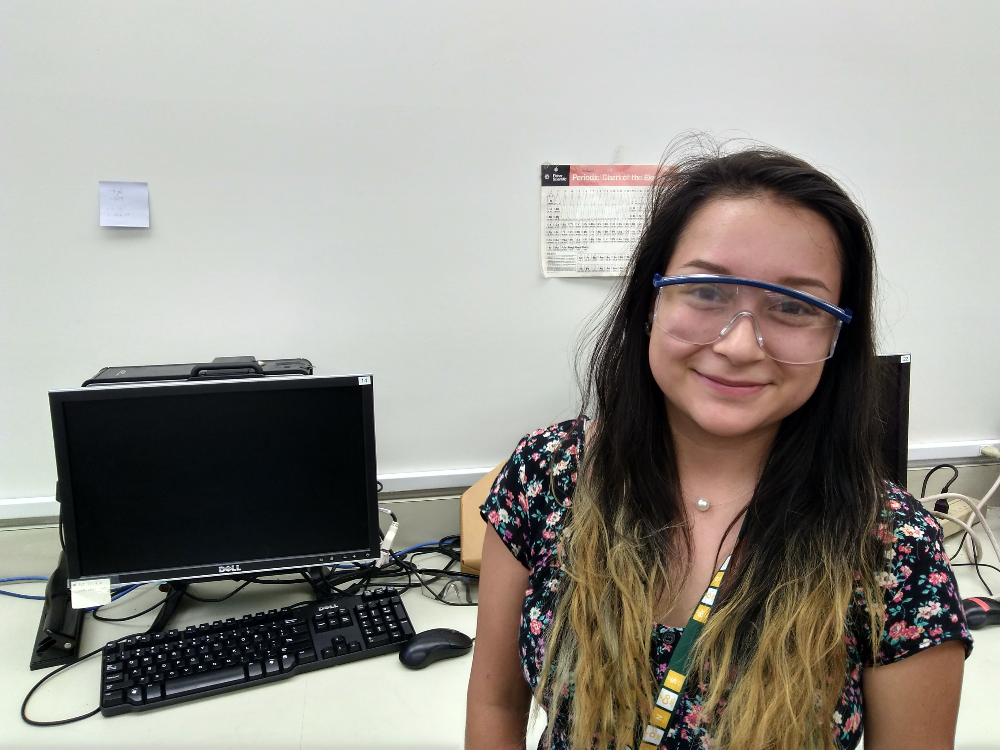
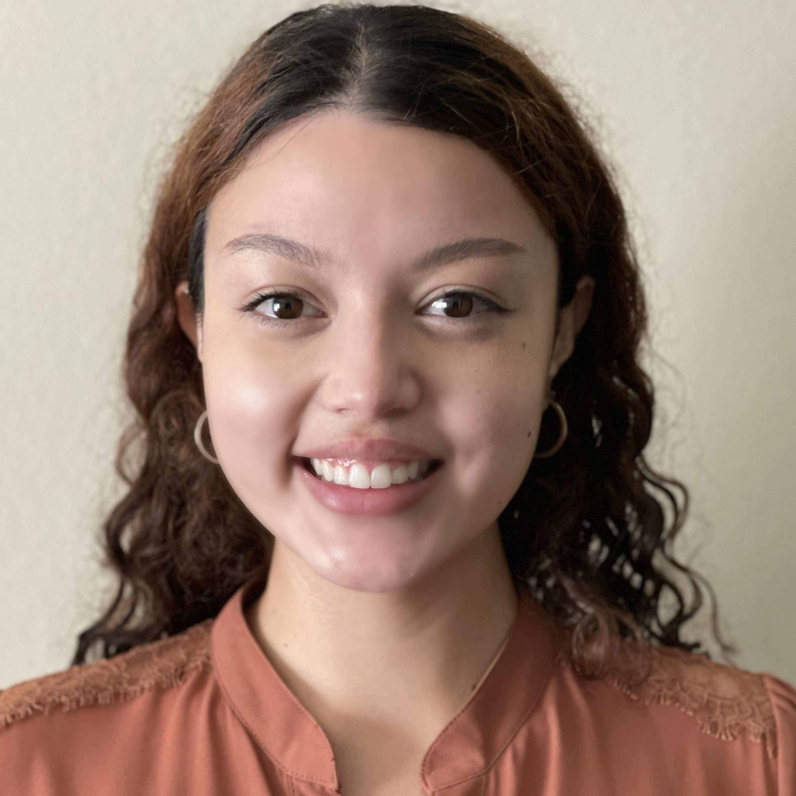
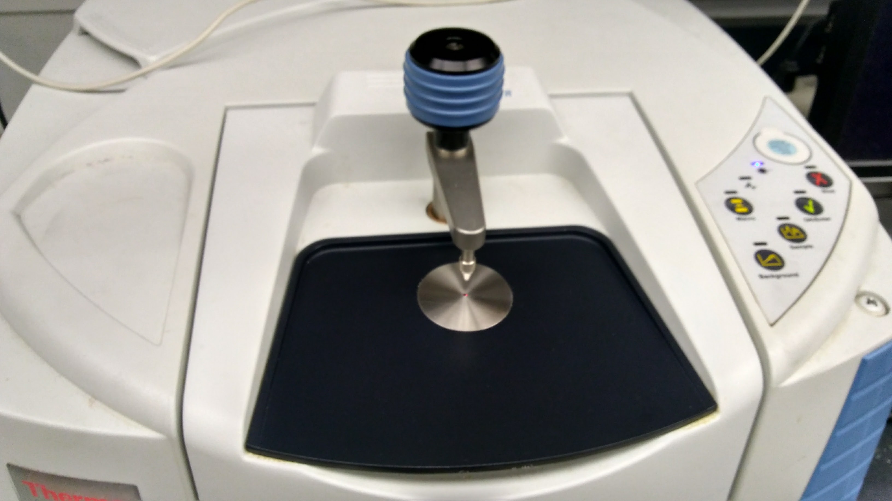
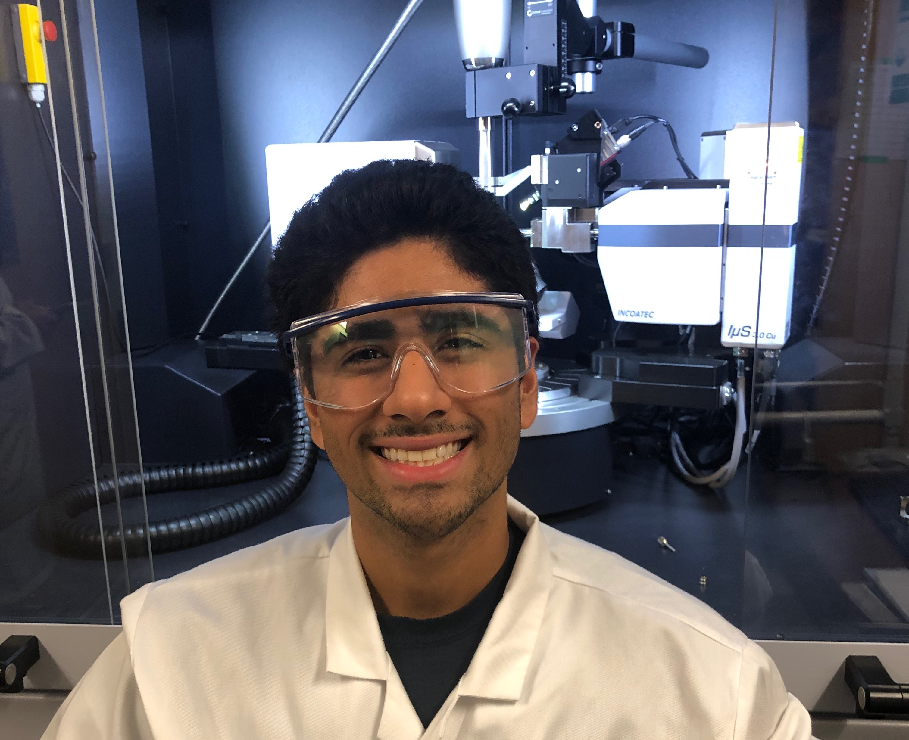
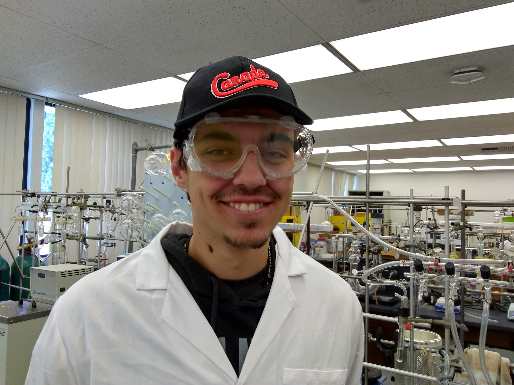
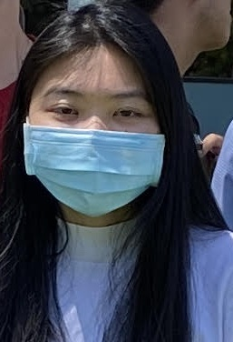
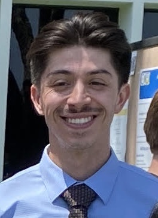
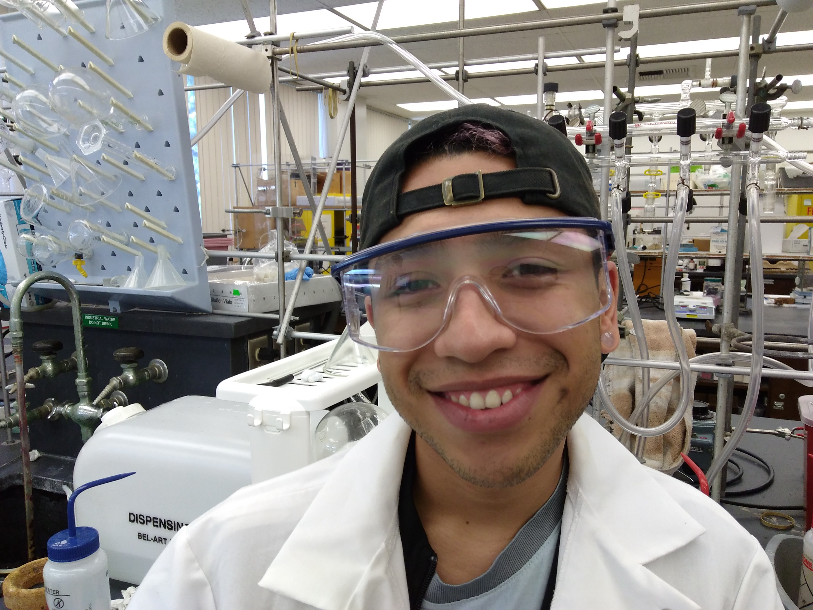

Group Members
Please contact Dr. Stieber if you are interested in conducting research in the group.
Group meetings are typically Tuesdays during lunch.
Current Members (click for group pictures)(click for alumni)

Briana Arreaga is a Chemistry major and RISE and LSAMP Fellow. She joined Aug. 2018 and is making Ni catalysts.

Romualda Aquino is a Master's student and joined the group in Oct. 2021. She is making new ligands.
Ethan Chavarin is Chemistry major, RIO fellow, and joined the group in Sept. 2021. He is studying Ni NHC complexes.

Caitlyn Cruz is Biology major, RIO fellow, and joined the group in Sept. 2021. She is working on crystallography.

Jessica De la Huerta Joined the group in Oct. 2019. She is studying crystallography.

Neil Dudeja joined the group in Oct. 2019 and is studying crystallography.

Carson Gorney is a Chemistry major and joined the group in Sept. 2018. He computes Cu nitrosyl complexes.
Carlos Gutierrez is Master's student and joined the group in Oct. 2021. He work on crystallography.

Dinh Ho joined the group in Jan. 2022, and synthesizes bis(imidazolium) salts.

Christian LeRue is Master's student and joined the group in Jan. 2022. He is making lanthanide complexes with bidentate NHC ligands.
Mei Matsumoto is Chemistry major and joined the group in Oct. 2020. She is working on crystallography.

Isaac Ramirez is a Chemistry major and joined the group in Sept. 2018. He is making Co nitrosyls.
Zachary Tam is a Master's student and joined the group in Oct. 2021. He does computational chemistry.